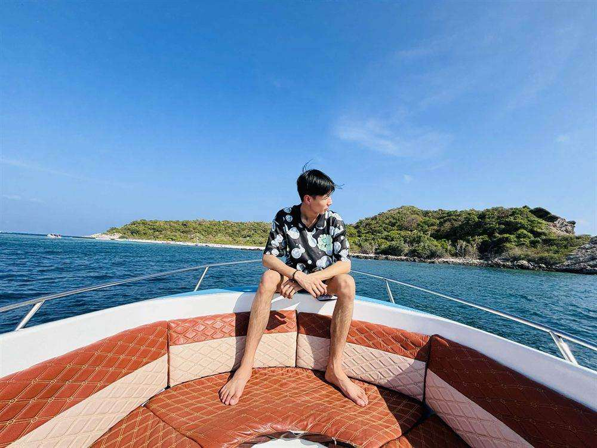

Software development
Mijn mbo-opleiding gaf me een praktische basis in programmeren en webapplicaties.

Even voorstellen
Je mag me ook Not noemen.
Ik ben HBO-ICT-student met een achtergrond in software development. Tijdens mijn mbo-opleiding heb ik een basis gelegd in programmeren en het bouwen van webapplicaties. Nu wil ik mijn kennis verder verdiepen en ideeën omzetten in bruikbare software.
Mijn mbo-opleiding gaf me een praktische basis in programmeren en webapplicaties.
Tijdens HBO-ICT verdiep ik mijn kennis en ontdek ik welke richting het beste bij me past.
In mijn vrije tijd houd ik me graag bezig met gamen en investeren.